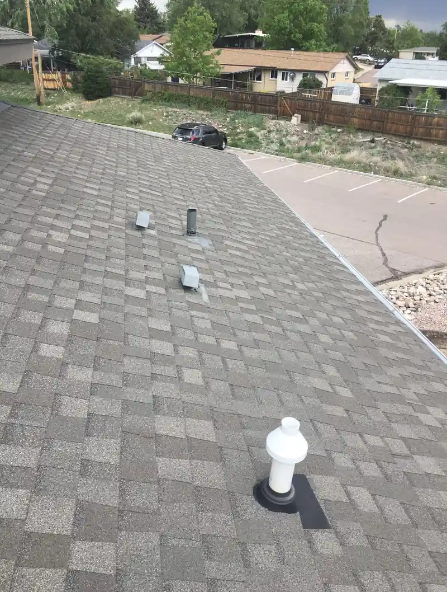
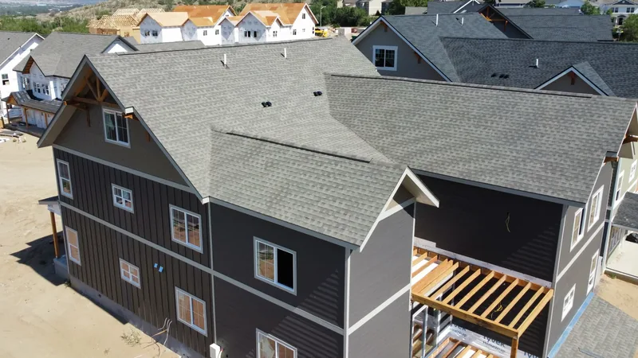
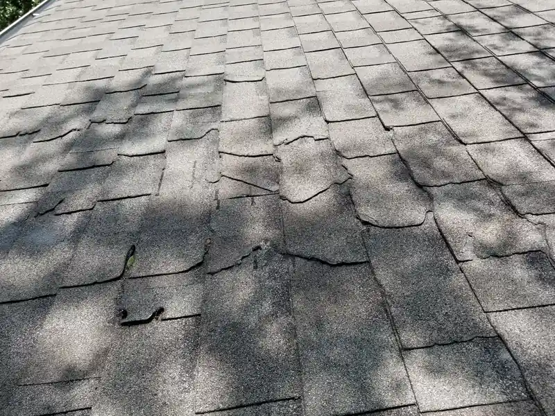

For a house you plan to keep, we'd put architectural shingles on it. The wind rating is the main reason, and the price gap on a whole roof is smaller than the price per bundle makes it look.
Here's how the two compare, with real numbers from the makers.
What's the difference?
A 3-tab shingle is a single flat layer of asphalt with two cutouts along the bottom edge, so each strip reads as three equal tabs once it's nailed down. The finished roof has a flat, even pattern, a little like a brick wall laid in neat rows.
An architectural shingle, also called laminated or dimensional, is two or more layers bonded together. The layers are cut in uneven shapes, so the finished roof has shadow lines and some depth. Atlas Roofing describes architectural shingles as layered to give a three-dimensional look, and heavier than 3-tab (Atlas).
From the street, you can usually tell them apart at a glance. A 3-tab roof looks flat and even. An architectural roof has texture, with darker bands where the layers overlap.

How do the wind ratings compare?
Here are two real products, one of each type, using what each maker publishes:
| What | 3-tab: IKO Marathon Plus AR | Architectural: Malarkey Highlander AR |
|---|---|---|
| Wind warranty | 60 mph | 110 mph standard, up to 130 mph enhanced |
| Shingle warranty | Limited 25 year | Limited lifetime |
| Algae protection | Algae-resistant granules | 15-year algae warranty |
| Hail rating | None listed | Class 3 under UL 2218 |
The figures come from the IKO product page and the Malarkey product page. Other lines from other makers carry different numbers, so read these as one example of the gap and check the specific shingle on your quote.
The enhanced rating is a step above the standard one. Ask your roofer what it takes to qualify for it, and get that written into the quote so you know which number you're actually getting.
Wind is the reason this matters. A shingle that lifts and loses its seal in one storm can let water in during the next one, and you may not see it from the ground. We cover what straight-line wind does to a roof in spring storms, straight-line wind and your roof.
Does 3-tab still make sense?
It's still made and still sold. Atlas calls 3-tab one of the most popular styles available, and IKO, the maker in the table above, still lists one. It costs less up front, and on a small, simple roof the savings can be the deciding factor.
We think it fits a short list of jobs:
- A shed, a detached garage or an outbuilding
- A rental you plan to sell soon, where the lowest price today wins
- A repair on a roof that already has 3-tab, where the patch has to blend in
That last one has its own problems. Matching the color of an older roof can be hard even when the style is the same, and we explain why in our section on matching shingles after damage.

How do they hold up in the humidity?
Both types can come algae-resistant, and with East Tennessee summers you want that either way. The black streaks you see running down older roofs come from blue-green algae, which Malarkey identifies as Gloeocapsa magma. Algae-resistant shingles carry copper granules that release copper ions and keep it from taking hold (Malarkey). The IKO 3-tab in the table has algae-resistant granules. Malarkey backs its architectural line with a 15-year algae warranty.
Humidity also works on what's under the shingles. An attic with poor ventilation holds damp air against the decking, and that's hard on any shingle sitting on top of it, 3-tab or architectural.
How long do they last?
Be careful with lifespan numbers you hear quoted. A lot depends on the attic, the install and the weather a particular roof sees.
What you can compare is the warranty. In the table, the 3-tab carries a limited 25-year warranty and the architectural shingle a limited lifetime one. A warranty term isn't a promise that the roof lasts that long. It's how long the maker says it will stand behind the product, with conditions attached. Ask whether the warranty is prorated, and how long the full coverage lasts before it starts stepping down. For ranges by roof type, see how long each kind of roof lasts in East Tennessee.

What's the price gap?
Architectural shingles cost more per bundle. On a whole roof, though, the shingle is one line among many. Tear-off, disposal, underlayment and flashing don't change much based on which shingle goes on. So the gap in the total is smaller than the gap per bundle.
The cleanest way to see it is to ask for both prices on the same written quote. Same roofer, same scope, two shingle lines. If you want to read the rest of that quote line by line, our post on the words on a roofing estimate walks through it, and our roof replacement page covers how the job runs from tear-off to cleanup.
Does the shingle change your insurance?
It can. The Insurance Information Institute lists the age and condition of your roof, along with its material and shape, among the things insurers look at (Triple-I). If you're torn between two shingles, call your agent with both product names and ask whether either one changes your premium. You can compare the lines on our products page.
Questions
Are architectural shingles harder to repair?
Not really. A roofer can lift the shingles around a damaged one and slide a replacement in, the same as with 3-tab. Matching the color on an older roof is the hard part for both.
Is there a step above architectural?
Yes. Some lines are designed to look like slate or shake, and some are impact-resistant. Malarkey rates the Highlander AR at Class 3 for hail and calls that the second highest rating possible. We cover impact-resistant options in shingle upgrades worth asking about.
Can I put architectural shingles over my old 3-tab?
Ask for a tear-off instead. Taking the old layer off lets the roofer see the decking underneath and fix anything soft before the next roof goes on.